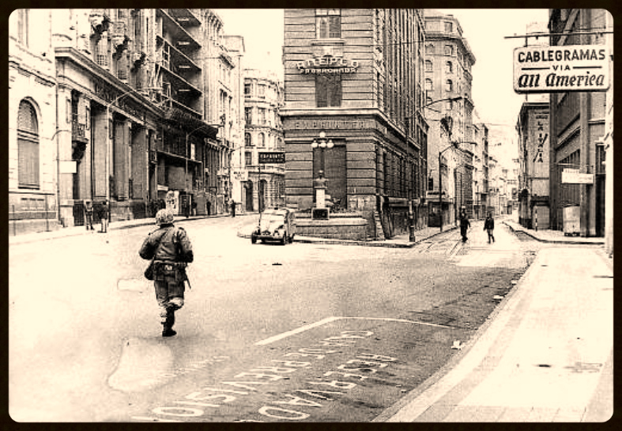

Entorno
La serie documental “Gritos del silencio” pretende ir a las locaciones en donde no se conocen historias y relatos sobre la dictadura, es por esto que iremos a diversas regiones de nuestro territorio chileno.
Tendremos historias en las ciudades más relevantes, Valparaíso, Bio Bio, Coquimbo, Antofagasta, Rancagua y región del Maule.